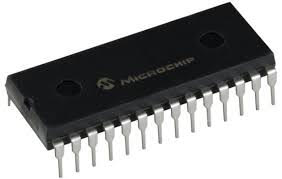

Durante la nostra vita, ognuno di noi ricorda dei momenti che lo hanno colpito, questi momenti vengono immagazzinati nella memoria, quindi come un essere umano anche una macchina può avere una memoria. La differenza tra la memoria umana e quella di una macchina è che quella umana immagazzina informazioni tramite stimoli complessi, mentre quella di una macchina immagazzina qualsiasi informazione e queste informazioni hanno un peso espresso in byte.
Una memoria di massa è un tipo di memoria che permette di immagazzinare grandi quantità di dati (file – audio – video – app) in modo permanente, è quindi a discrezione dell'utente l'eliminazione o meno dei suddetti dati. Esistono vari tipi di memorie di massa:
La memoria RAM (Random Access Memory) è una memoria di tipo volatile, cioè perde tutte le informazioni quando non è alimentata. Esistono vari tipi di RAM:
La memoria ROM (Read-Only Memory) è una memoria non volatile che conserva i dati anche quando il dispositivo è spento. Viene utilizzata per memorizzare informazioni cruciali e istruzioni che non devono essere modificate, come il firmware o il BIOS. La memoria ROM è principalmente sola lettura, ma esistono vari tipi, come EPROM e EEPROM, che permettono la scrittura e la cancellazione in modo specifico.
EPROM (Erasable Programmable Read-Only Memory) è una memoria che può essere programmata e poi cancellata tramite luce ultravioletta. Una volta cancellata, può essere riprogrammata più volte.
EEPROM (Electrically Erasable Programmable Read-Only Memory) è simile, ma può essere cancellata e riprogrammata elettricamente, senza bisogno di luce. Permette di modificare singoli byte di memoria, ed è più versatile rispetto all'EPROM.
